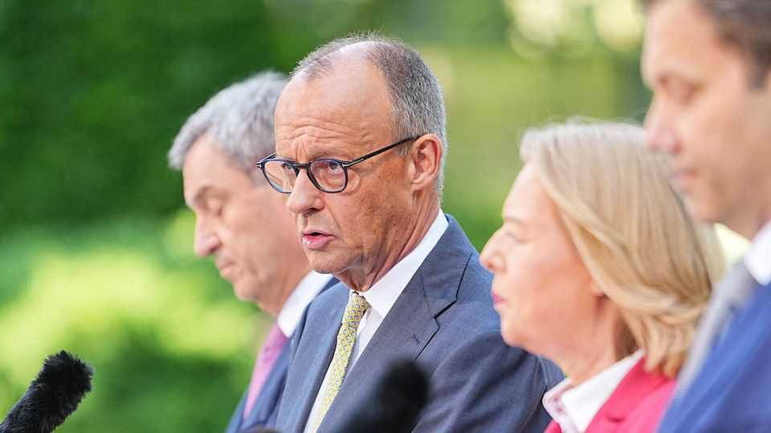

Is Germany’s government finally getting its act together?
A new set of reforms has lifted sagging spirits in Berlin
July 2nd 2026

THEY HAD cleared their diaries for three days, but in the end it took just eight hours. Late on July 1st the leaders of Germany’s ruling parties finalised a 34-point “programme for growth and employment” designed to lift the country’s sagging spirits, covering everything from reforms to the ailing public-pension system to liberalisation of Sunday-trading laws. The package alone is unlikely to zap life into a rapidly deindustrialising economy that has barely grown since 2019. In some respects it disappoints. But since Friedrich Merz, the chancellor, formed his centrist coalition just over a year ago, it has over-promised, underdelivered and squabbled endlessly. Some thought it might not survive. Now it has shown itself capable of comprehensive action. The sighs of relief were audible over Berlin.
“We want to get Germany back on track, and it is now clear that this is possible,” said Mr Merz on July 2nd. The parties backed a raft of measures to snip back the red tape that bedevils German business, including what Mr Merz called the “bureaucratic monster” of data-protection rules. They promised to back eu proposals to tackle subsidised Chinese exports. They also vowed to pass a law to forestall a plan by Die Linke, a hard-left party, to expropriate corporate landlords should it take power in Berlin in an election in September.
The trickiest debate was over how to fulfil a promise of tax relief for Germany’s low- and middle-income earners. Around €10bn ($11bn) has been found, funded in part by the grudging acquiescence of Mr Merz’s conservative Christian Democrats (cdu) to raise taxes on those with incomes above €250,000—probably only around 150,000 people. Lars Klingbeil, finance minister and leader of the Social Democrats (spd), the junior coalition partner, had hoped for more. But the cdu and its Bavarian sister party, the Christian Social Union, refused to raise taxes more broadly, or to take a scythe to Germany’s range of tax breaks and subsidies.
The parties also agreed to allow firms to hire workers on fixed-term contracts for longer, and to raise the bar for taking sick days (Germany has one of the highest such absentee rates among its peers). These measures, says Annika von Mutius, ceo of Empion, an ai start-up, are “welcome and overdue”, though she laments the lack of reforms to Germany’s stringent hiring-and-firing rules.
After months of false starts, there is a sense of momentum in Berlin. Next week parliament will tackle reforms to the wildly inefficient health-care system that should save €19bn next year. The cabinet is due soon to agree on changes to Germany’s long-term-care insurance system. Most importantly, the coalition agreed to implement in full the recommendations of a pension commission which reported last week. In Germany’s rapidly ageing society, these social-security costs threatened to spiral out of control. Tackling them was an urgent priority for employers.
What explains the change? One figure close to Mr Merz credits two factors: the concentration of minds engendered by surging support for the right-wing populist Alternative for Germany (afd), now leading in polls; and a wise decision to outsource debates on the trickiest topics to experts whose reports politicians could not credibly reject. Notably, the coalition parties immediately backed the proposals of the pension commission, which include gradually lifting the retirement age to 70 and having state pension funds invest in private markets. The parties themselves would not have been capable of negotiating such an ambitious deal, say insiders.
Still, Germany’s many veto players will have their say. Some state leaders are unhappy with elements of the pension and care proposals. The underwhelming tax tweaks will certainly irritate some in the spd. And every law agreed in cabinet must make its way through parliament: the coalition’s Bundestag majority of just 12 means success is hardly assured.
Most seriously, elections in Germany’s east in September could bring the afd to power at the state level for the first time, which would send shock waves through the establishment. German officials have long claimed that the success of the afd, a party with no coherent policy platform, sprang in part from frustration with the inability of the government to get anything done. That claim can now be tested. ■
To stay on top of the biggest European stories, sign up to Café Europa, our weekly subscriber-only newsletter.